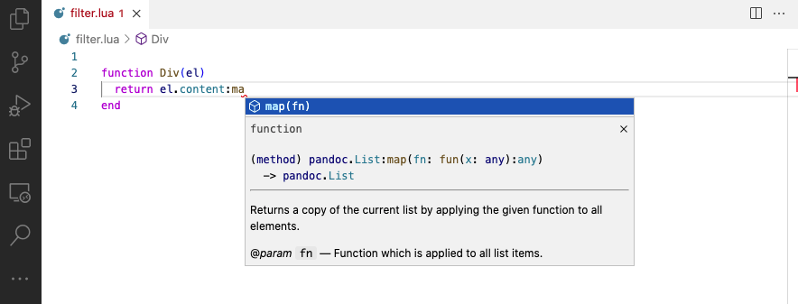
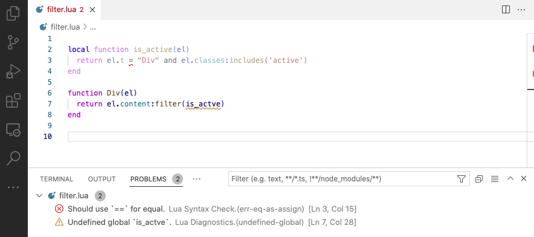

Lua Development
Overview
The programming language used to create filters and shortcodes is Lua, a lightweight, high-level scripting language. Lua is the extension language for Pandoc (which includes an embedded Lua interpreter). This means that Quarto extensions have no additional runtime dependencies or requirements.
This article will start by providing an orientation to learning Lua for those new to the language. Then, we’ll provide some tips for productive Lua development.
See the Lua API Reference for additional details on the APIs available for developing extensions.
Learning Lua
Lua is a scripting language similar to Python, R, Julia, and JavaScript. If you are familiar with one or more of those languages you won’t have trouble picking up Lua.
Here is a recommended approach for learning Lua for use with Quarto:
Read Learn Lua in 15 Minutes for a quick overview of the language and its syntax.
Check out the first two sections of the Pandoc Lua Filters documentation then skip ahead to the Filter Examples section to make things a bit more concrete.
Once you have the basic idea of Lua and filters, get a more complete picture by skimming the full Pandoc Lua Filters documentation. You won’t understand everything, but its a good orientation to all of the moving parts.
Finally, check out the source code of the extensions published in the Quarto Extensions GitHub organization (these are extensions maintained by the Quarto core team). Once you are able to read and understand that code you are ready to start developing your own extensions!
Some additional learning resources you might find useful include:
Lua Quick Reference, a PDF with a compact summary of the language and base library.
Programming in Lua, a book by Roberto Ierusalimschy, the chief architect of the language.
Lua Reference Manual, a complete definition of the language and base library.
Development Tools
Quarto Preview
Quarto preview, quarto preview, is aware of Lua source files within extensions, and will automatically reload the preview whenever a Lua source file changes.
This makes it very easy to incrementally develop and debug Lua code (especially when combined with the native format a described below). Live reloading for Lua files will work no matter what source code editor you are using (VS Code, RStudio, Neovim, etc.).
VS Code
While you can use any text editor along with quarto preview for developing Lua extensions, we strongly recommend that you consider using VS Code, as it provides a number of additional tools including:
Code completion and type checking.
Diagnostics for various common problems with code.
The ability to add types to your own functions.
Code completion covers the Lua base library as well as the Pandoc and Quarto Lua APIs, and also provides documentation on hover:

Diagnostics check for many common errors including failing to check for nil, undefined global values, shadowing of local variables, unused functions, etc.

Installation
To get started with using VS Code for Lua extension development, install the following software:
Install the latest version (v1.2 or greater) of Quarto
Install the latest version (v1.40.0 or greater) of the Quarto VS Code Extension.
For Lua code intelligence, install the Lua LSP VS Code Extension.
Once you’ve installed these components you should see the features described above appear automatically in your Quarto workspaces that include Lua code.
There are many options available for configuring Lua completion and diagnostics. It’s also possible to provide type information for your own functions. See the section on Lua in VS Code below for details.
Diagnostic Logging
Use the functions in the quarto.log module to add diagnostic logging to your extension. You can use both temporary logging calls to debug a particular problem as well as add logging calls that are always present but only activated when the --trace flag is passed to quarto render or quarto preview.
The quarto.log module is based on the pandoc-lua-logging project from @wlupton. You’ll recognize the functions described below from that module (e.g. logging.output(), logging.warning(), etc). For documentation on using all of the logging functions see the project README file.
quarto.log.output
To log any object (including Pandoc AST elements), you the quarto.log.output() function. For example, here we log the Div passed to us in our filter callback function as well as some diagnostic text:
filter.lua
function Header(el)
quarto.log.output("=== Handling Header ===")
quarto.log.output(el)
endThis is log output you’d see in the terminal when the filter is executed:
=== Handling Header ===
Header {
attr: Attr {
attributes: AttributeList {}
classes: List {}
identifier: "section-one"
}
content: Inlines {
[1] Str "Section"
[2] Space
[3] Str "One"
}
level: 2
}quarto.log.warning
Use the quarto.log.warning() function to output warnings that can be suppressed with the --quiet flag:
filter.lua
function RawBlock(el)
if el.format == "html" then
quarto.log.warning("Raw HTML not supported")
return pandoc.Null()
end
endFor example, the warning above will not appear for this call to quarto render:
quarto render document.qmd --quietquarto.log.debug
Use the quarto.log.debug() function to write output whenever the --trace flag is present:
filter.lua
function Header(el)
quarto.log.debug("Header: " .. el.identifier)
endFor example, the debug message will appear for this call to quarto preview:
quarto preview document.qmd --traceYou can keep these calls in your filter since they won’t produce output unless --trace is specified.
Native Format
A great tool for understanding the behavior of a Lua filter or shortcode in more depth is to target the native format (as opposed to html, pdf, etc.). The native format will show you the raw contents of the Pandoc AST. For example, here’s a simple markdown document alongside it’s native output:
document.qmd
---
format: native
---
## Heading
Some text below
Pandoc
Meta
{ unMeta = fromList [] }
[ Header
2
( "heading" , [] , [] )
[ Str "Heading" ]
, Para
[ Str "Some"
, Space
, Str "text"
, Space
, Str "below"
]
]Here we add a simple filter to the document that wraps all headers in pandoc.Emph (italics). You can see that the Emph AST element now wraps the heading text in the native output:
document.qmd
---
format: native
filters: [filter.lua]
---
## Heading
Some text belowfilter.lua
function Header(el)
el.content = {
pandoc.Emph(el.content)
}
return el
endMeta
{ unMeta = fromList [] }
[ Header
2
( “heading” , [] , [] )
[ Emph [ Str “Heading” ]
]
, Para
[ Str “Some”
, Space
, Str “text”
, Space
, Str “below”
]
]
Lua in VS Code
Type Hints
While Quarto provides type information for the Pandoc and Quarto Lua APIs, this doesn’t cover functions that you write within your own extensions. You can however add type information using Annotations. For example, here we indicate that a function takes a string and a pandoc.List() and returns either a pandoc.List() or nil:
---@param text string
---@param blocks pandoc.List
---@return pandoc.List|nil
function check_for_text(text, blocks)
-- implementation
endWith these type declarations, any attempt to call the function without the correct types will result in a diagnostic message. Further, if a caller fails to check for nil before using the return value a diagnostic will also occur.
You can learn more about all of the available type annotations in the Annotations Reference for the Lua Language Server.
Settings
The Lua Language Server extension includes a wide variety of options to customize its behavior (e.g. what diagnostics to show, which completions to offer, etc.).
All of the available options are documented in the Settings Reference for the Lua Language Server.
Quarto provides a default configuration file (.luarc.json) within the root of any workspace that includes Quarto Lua extensions. This file is necessary because it provides a reference to the Lua type definitions for Pandoc and Quarto within your currently installed version of Quarto. Without it, the Lua extension wouldn’t know anything about Quarto and would report errors for “unknown” Pandoc modules.
If, for example, Quarto is installed at /opt/quarto/, the default contents of the configuration file will be:
.luarc.json
{
"Generator": ["Quarto"],
"Lua.runtime.version": "Lua 5.3",
"Lua.workspace.checkThirdParty": false,
"Lua.workspace.library": ["/opt/quarto/share/lua-types"],
"Lua.runtime.plugin": "/opt/quarto/share/lua-plugin/plugin.lua",
"Lua.completion.showWord": "Disable",
"Lua.completion.keywordSnippet": "Both",
"Lua.diagnostics.disable": ["lowercase-global", "trailing-space"]
}The .luarc.json file will also be automatically added to .gitignore since it points to the absolute path of Quarto on the local system.
You can change any of the settings within this file save for the Lua.workspace.library and Lua.runtime.plugin (these are automatically maintained by the Quarto extension based on where Quarto is installed). See the Settings Reference for all available settings.
If you prefer to manage this file manually, simply remove the Generator key and Quarto will no longer update the Lua.workspace.library and Lua.runtime.plugin settings automatically.
You can also globally disable the automatic creation of .luarc.json using the Quarto > Lua: Provide Types VS Code setting.